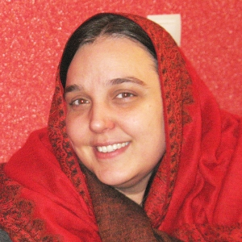

|
|
|
Browsing
Contact Us |
Campaigners |
Face to Face |
Tribune |
Interview |
News |
On the Web |
One Million |
Report
Farsi | Français | German | Italian | Spanish | العربية Also in this section
|
 Sussan Tahmasebi, Campaign Activist Honored by Human Rights WatchThursday 7 October 2010 View online : Human Rights Watch Defenders Work to End Abuses in Cameroon, China, Egypt, Ethiopia, Iran, and Russia Six relentless and courageous advocates of human rights will be honored in November 2010, with the prestigious Alison Des Forges Award for Extraordinary Activism, Human Rights Watch said today. All six have faced substantial threats of violence or imprisonment, but they continue to speak out and to work to create a world in which people live free of violence, discrimination, and oppression. The award is named after Dr. Alison Des Forges, senior adviser to Human Rights Watch’s Africa division for almost two decades, who was tragically killed in a plane crash in New York on February 12, 2009. Des Forges was the world’s leading expert on Rwanda, the 1994 genocide, and its aftermath. Human Rights Watch’s annual award honors her outstanding commitment to and defense of human rights. It celebrates the valor of individuals who put their lives on the line to protect the dignity and rights of others. The six winners of Human Rights Watch’s 2010 Alison Des Forges Award for Extraordinary Activism are: Hossam Bahgat, executive director of the Egyptian Initiative for Personal Rights; "We’re inspired by the courage and commitment of these extraordinary activists," said Kenneth Roth, executive director of Human Rights Watch. "They confront discrimination and danger every day in their struggle to pressure their governments to uphold human rights for all." Human Rights Watch staff work closely with the human rights defenders as part of the organization’s research on some 90 countries around the world. The defenders will be honored at the 2010 Human Rights Watch annual dinners in Amsterdam, Chicago, Geneva, Hamburg, London, Los Angeles, Munich, New York, Oslo, Paris, San Francisco, Santa Barbara, Toronto, and Zurich. Hossam Bahgat, Egypt As the founder and director of the Egyptian Initiative for Personal Rights (EIPR), Hossam Bahgat defends civil rights and liberties in Egypt. He speaks out against the government’s violations of religious freedom and the right to privacy. Bahgat recently won a case against the Interior Ministry on behalf of Egyptian Baha’is and has played a prominent role in exposing sectarian violence against Coptic Christians - both minorities facing frequent discrimination. Human Rights Watch honors Hossam Bahgat for upholding the personal freedoms of all Egyptians. Elena Milashina, Russia As a leading investigative journalist for Novaya Gazeta, Russia’s most prominent independent newspaper, Elena Milashina exposes the truth about human rights abuses and widespread government corruption. Despite Russia’s attempts to silence its critics and hide abuses, Milashina remains outspoken, publishing accounts of enforced disappearances, extrajudicial executions, and torture. She is also conducting her own investigation into the brazen murder of a leading Chechen human rights defender, Natalia Estemirova, calling for accountability at the highest level. Human Rights Watch honors Elena Milashina for her courage in confronting Russia’s deeply problematic human rights record. Yoseph Mulugeta, Ethiopia Yoseph Mulugeta is the former secretary general of the Ethiopian Human Rights Council (EHRCO), Ethiopia’s leading rights monitoring organization, currently struggling to survive under a repressive new law that bans human rights work by organizations receiving foreign funding. When the EHRCO was threatened, Mulugeta applied for political asylum in the United States, where he continues to speak out about the realities behind the Ethiopian government’s democratic facade. Human Rights Watch honors Yoseph Mulugeta for his commitment to independent civil society in Ethiopia, where freedom of expression has been eviscerated. Steave Nemande, Cameroon Steave Nemande, medical doctor and president of the human rights organization Alternatives-Cameroun, speaks out against laws criminalizing homosexual conduct. In Africa, an overwhelming majority of countries still consider same-sex acts a crime, which in some cases is punishable by death. Nemande also runs a health care facility for lesbian, gay, bisexual, and transgender (LGBT) people living with HIV/AIDS. Human Rights Watch honors Steave Nemande for his tireless work to promote and defend the human rights of LGBT people in Africa. Sussan Tahmasebi, Iran Sussan Tahmasebi, an activist for two decades, works to strengthen Iranian civil society with a focus on gender issues and women’s rights. She has conducted training in leadership and peace-building, continues to facilitate collaboration between Iranian and international civil society, and is a founding member of the award-winning One Million Signatures Campaign. The campaign rallies support for an end to Iran’s gender-biased laws. Tahmasebi has been harassed by security forces and was banned from traveling abroad for over two years because of her work. Human Rights Watch honors Sussan Tahmasebi for her dedication to promoting civil society and making women’s rights a national priority in Iran. Liu Xiaobo, China Liu Xiaobo, one of the most outspoken critics of the Chinese government, spent a year and a half in prison after the 1989 Tiananmen Square peaceful protests, and in 1996 was imprisoned for three years for criticizing China’s policy toward Taiwan and the Dalai Lama. Last year, he was sentenced to a further 11 years for co-authoring Charter 08, a petition to mark the 60th anniversary of the Universal Declaration of Human Rights. A former university professor, Liu Xiaobo was recently nominated for the Nobel Peace Prize. Human Rights Watch honors Liu Xiaobo for his fearless commitment to freedom of expression and assembly in China. |